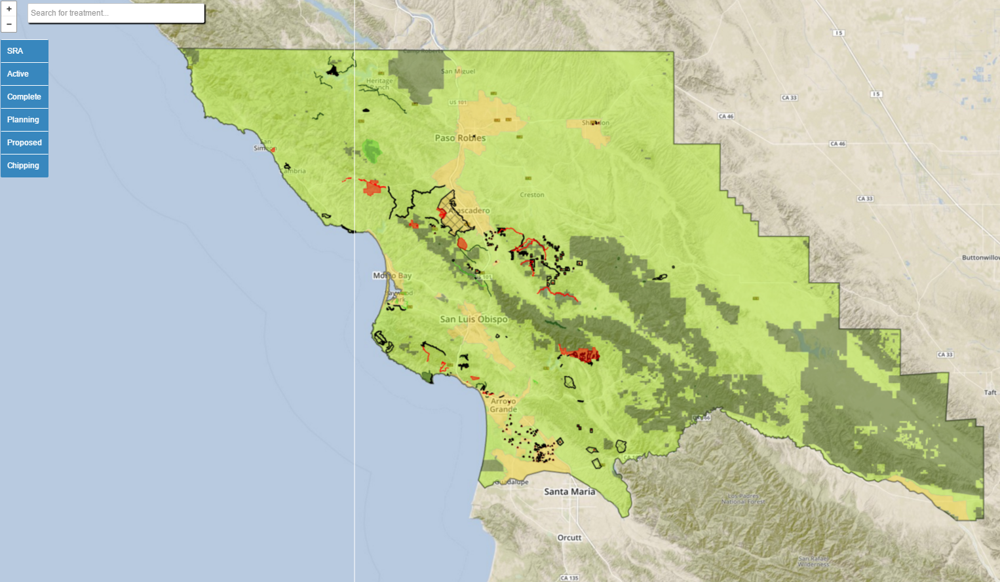
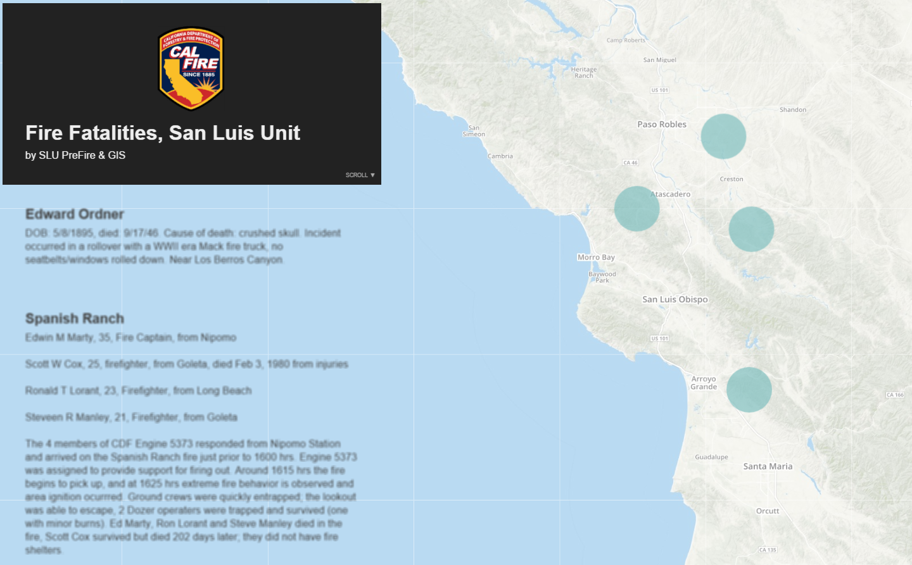

BootLeafSLU
Github

CalMAPPER
Github

Note: This project was last updated in 2015, the information may not be up to date.
Leaflet map showing fuel reduction treatments in SLO County. Select between completed, planning, or proposed treatments and chipping piles.Fire Fatalities
Github

Interactive map of fire fatalities in the history of SLO County. Adapted from the Mapbox Sherlock tutorial on Github.
Fire Danger Operating Plan
GithubFire Danger Operating Plan information & material.
FCC Communication Towers
Project on Mapbox

Mobile Homes, RV and Camp Sites
GithubLeaflet map showing all mobile home parks and campgrounds in SLO County. Utilizes marker cluster.
Radio Coverage
Github

Safe Refuge Areas
Project on Mapbox

Water Purveyors
Project on Mapbox

West Cuesta Video Map
Github

5-Year Ignitions
Project on Cartodb
Tree Mortality
Project on Mapbox